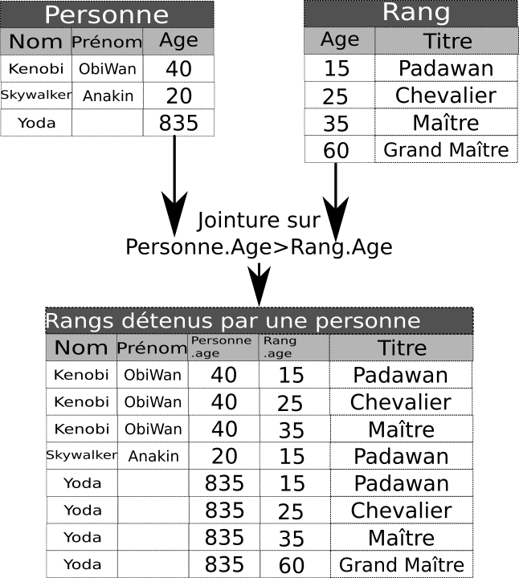

Modification des bases de données et requêtes complexes
Les exemples et exercices donnés ci-dessous sont, sauf mention contraire, disponibles directement dans un notebook Capytale (Code C156-162763).
Modification des bases de données
Suppression de lignes
Pour supprimer des lignes selon une condition donnée, on utilise l'ordre :
DELETE FROM table WHERE conditions;
Exemple
La requête suivante :
SELECT * FROM emprunt WHERE code_barre='934701281931582';
donne la table suivante en réponse :
| code_barre | isbn | retour |
|---|---|---|
| 934701281931582 | 978-2260019183 | 2020-01-01 |
| 934701281931582 | 978-2371240087 | 2020-01-01 |
Pour supprimer la ligne référençant l'isbn 978-2260019183 :
DELETE FROM emprunt WHERE code_barre='934701281931582' AND isbn='978-2260019183';
SELECT * FROM emprunt WHERE code_barre='934701281931582';
| code_barre | isbn | retour |
|---|---|---|
| 934701281931582 | 978-2371240087 | 2020-01-01 |
Quelques points de remarques
-
L'oubli de la clause
WHEREsupprime toutes les données de la table ! Cependant la table existe encore et il est possible d'insérer de nouvelles données. Pour supprimer complètement une table, il faut utiliser l'instruction :DROP TABLE nom_table; -
Il est impossible de supprimer une ligne dont l'absence violerait la contrainte de références (clé étrangère). Par exemple l'ordre suivant ne fonctionnera pas, car l'isbn donné est présent dans la table
emprunt:DELETE FROM livre WHERE isbn='934701281931582';
Tout ou rien
Si un ordre passé devant supprimer plusieurs lignes rencontre à un moment une erreur, alors toutes les suppressions effectuées par cet ordre sont annulées ! On parle d’exécution de type « tout ou rien ».
Mise à jour de lignes
Pour mettre à jour des lignes, on utilise un ordre SQL de type :
UPDATE nom_table
SET attribut1 = nouvelle_valeur1,
attribut2 = nouvelle_valeur2,
...
WHERE conditions;
Exemple
La requête suivante :
SELECT * FROM usager WHERE prenom='ALAIN';
donne comme table résultat :
| nom | prenom | adresse | cp | ville | code_barre | |
|---|---|---|---|---|---|---|
| MOREAU | ALAIN | 48, Rue du Château | 75005 | Paris | amoreau1@abc.de | 421921003090881 |
Pour changer l'email de cet utilisateur, on peut utiliser l'ordre suivant :
UPDATE usager
SET email = 'alain.moreau@truc.com'
WHERE code_barre ='421921003090881';
| nom | prenom | adresse | cp | ville | code_barre | |
|---|---|---|---|---|---|---|
| MOREAU | ALAIN | 48, Rue du Château | 75005 | Paris | alain.moreau@truc.com | 421921003090881 |
Requêtes complexes
Jointures
Jusqu'à présent, les requêtes que nous avons écrites ne nécessitent que l'utilisation d'une seule et unique table. Mais bien souvent, nous avons à effectuer des requêtes récupérant des données de plusieurs tables simultanément. Pour effectuer une telle requête, il faudra utiliser une ou des jointures de tables.
Jointure sur deux tables
Jointure naturelle de deux tables
Prenons l'exemple de deux tables, l'une nommée Personne contient les noms, prénoms et âge de membres de l'ordre Jedi, et la seconde nommée Rang les rangs Jedi ainsi que l'âge minimum requis pour l'atteindre.
Nous pouvons effectuer une jointure sur le critère de l'age, en créant une table contenant toutes les lignes des rangs ayant pu être atteints par une personne, sur le critère Personne.Age>Rang.age :

On notera que pour éviter toute confusion, les deux colonnes Age originelles ont vu leurs noms préfixés par leur table d'origine, avec la notation table.colonne.
Une table de jointure telle que celle-ci sera construite grâce à la clause suivante :
Personne JOIN Rang ON Personne.Age > Rang.Age
Il sera ensuite possible d'utiliser cette table au sein d'une clause SELECT.
Exemples
-
Pour connaitre la liste des livres empruntés, on utilisera l'ordre SQL suivant :
SELECT * FROM emprunt JOIN livre ON emprunt.isbn=livre.isbn; -
Il est bien sûr possible de projeter le résultat de la requête et d'effectuer une sélection. Par exemple pour connaitre la liste des personnes devant rendre au moins un livre avant le 01 février 2020 :
SELECT DISTINCT usager.nom, usager.prenom, emprunt.retour FROM usager JOIN emprunt ON usager.code_barre=emprunt.code_barre WHERE emprunt.retour<'2020-02-01';
Jointures sur plusieurs tables
Exemple
On souhaite connaitre les titre et les auteurs correspondant aux livres actuellement empruntés. Il faut donc faire une jointure sur les 4 tables livre, auteur, auteur_de et emprunt. La requête a écrire va donc être plus longue que celles vues jusqu'alors :
SELECT livre.titre, auteur.nom, auteur.prenom
FROM
emprunt JOIN livre ON emprunt.isbn=livre.isbn
JOIN auteur_de ON livre.isbn = auteur_de.isbn
JOIN auteur ON auteur_de.a_id = auteur.a_id;
Alias des tables
Certaines requêtes deviennent rapidement pénibles à écrire. Pour simplifier un peu cette écriture, il est possible d'utiliser un alias pour les tables à l'aide du mot-clé AS. Ainsi l'ordre précédent peut-être écrit :
SELECT l.titre, a.nom, a.prenom
FROM
emprunt AS e JOIN livre AS l ON e.isbn=l.isbn
JOIN auteur_de AS ad ON l.isbn = ad.isbn
JOIN auteur AS a ON ad.a_id = a.a_id;
Requêtes imbriquées
Il est tout à fait possible d'imbriquer des requêtes les unes dans les autres, puisque le résultat d'une requête est lui-même une table temporaire :
SELECT * FROM (
SELECT * FROM livre
WHERE annee >= 1990) AS tmp
WHERE tmp.annee<=2000;
Ici on crée une table temporaire d'alias tmp, dans laquelle on stocke toutes les lignes dont l'année de publication est supérieure ou égale à 1990, puis on effectue une nouvelle sélection sur cette table temporaire en ne gardant que les lignes dont l'année de publication est inférieure ou égale à 2000.
Analyse par un SGBD
UN SGBD analysera cette requête exactement de la même manière qu'il analysera la suivante :
SELECT * FROM livre WHERE annee>=1990 AND annee<=2000;
Il n'y aura aucune différence entre les deux en terme de vitesse de traitement.
Il est aussi possible d'imbriquer des requêtes dans la clause WHERE, en respectant certaines conditions. Par exemple pour connaitre la liste des livres dont l'année est la plus ancienne dans la base, on va utiliser :
SELECT titre, annee
FROM livre
WHERE annee = (SELECT MIN(annee) FROM livre);
Écrire une requête imbriquée
Écrire une requête SQL donnant la liste des livres publiés la même année que le livre dont le titre contient la chaine de caractère 'Jack Barron'.
SELECT titre
FROM livre
WHERE annee = (SELECT annee FROM livre WHERE titre LIKE '%Jack Barron%');
Exercices
Effectuer les requêtes avec jointures du notebook jeux olympiques(Code 917a-165474) (merci M. Leleu).